WHAT'S NEW IN AVENGERLAND
2013
31st December – Geoff Dodd has the honour of finding the last location of the year. This is a vintage shot of Miami from THE SAINT: The Effete Angler. He also sent in a link to this current photo.
THE SAINT: The Effete Angler (Anthony Bushell: 1962)
2399 Collins Avenue Miami Beach, Florida, USA
- Establishing shot of Miami Beach (the Helen Mar Building, is still standing
as is the footbridge which leads across to Lake Pancoast Drive)
(Identified by Geoff Dodd, December 2013)

 (http://432.mlsimages.movoto.com/030/a1863030_0.jpg)
(http://432.mlsimages.movoto.com/030/a1863030_0.jpg)
4th November – A magnificent find from Geoff Dodd which has taken him years of searching. North Middlesex Golf Club on Friern Barnet Lane is the Hospital seen in THE BARON: The High Terrace. This is a location that has been on the books so long it pre-dates the time I started taking screen-grabs and was using pencil sketches to find locations.
THE BARON: The High Terrace (Robert Asher: September 1966)
North Middlesex Golf Club, N20 -
Mannering is taken to Hospital after his car crash. Johnny and Rhys break into
the hospital in an attempt to finish what they started.
(Identified by Geoff Dodd, November 2013)
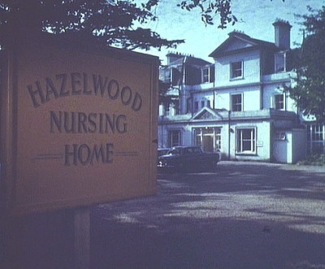
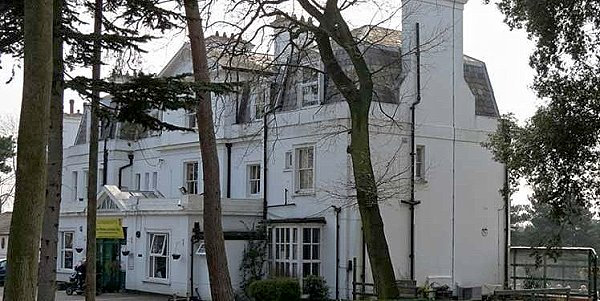
28th October – Another find from Goeff Dodd, Watching the THE HUMAN JUNGLE: Success Machine Goeff recognised this location from THE AVENGERS. As every building in the shot from The Danger Makers has now been demolished this was a geat peiece of work. Thanks once again from Geoff!
THE AVENGERS: The Danger Makers (Charles Crichton: November
1965)
East Wing, St. Thomas’ Hospital,
Lamberth, SE1 - Gordon Lamble, head of the Chemical Warfare
Establishment, climbs out of the hospital window, stands on the ledge and looks
at the view.
(Identified by Geodd Dodd, October 2013)

THE HUMAN JUNGLE: Success Machine (Sidney A Hayers, Jan/Feb 64)
St. Thomas’ Hospital, Lamberth, SE1
- (Spotted by Mike Richardon March 2011)
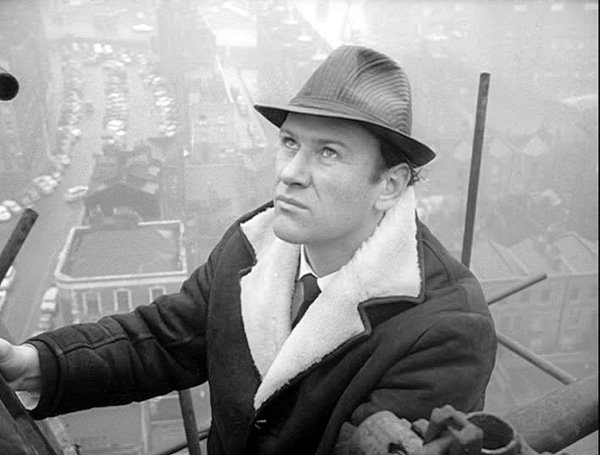
12th December – Many thanks to Paul Stroud for persevering with his Danish research on THE PROTECTORS episodes. He has come of with a series of excellent finds from a short sequence from Route 27which are geographically miles apart.
THE PROTECTORS: Route 27 (Don Leaver, 1973)
(15:18) Julebækhuset Restaurant, Nordre Strandvej, Hellebæk - Sandven waits for
Harry while the Contessa sits in the car. Later, when Harry arrives, they tell
him to use their supplied car to lead them to the consignment of drugs.
(Spotted by Paul Stroud, December 2013)

THE PROTECTORS:
Route 27 (Don Leaver, 1973)
(15:35) Rungsted Strandvej, Rungsted - Harry drives past a layby from which
he is followed by Sandven's chauffeur.
(Spotted by Paul Stroud, December 2013)
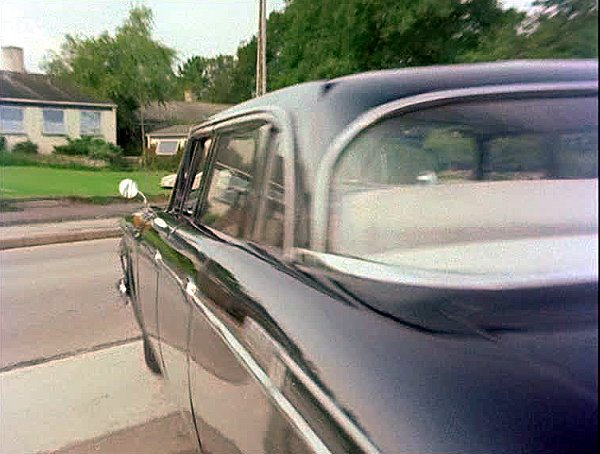
THE PROTECTORS: Route 27 (Don Leaver, 1973)
(15:46) Humlebæk Strandvej, Humlebæk - Harry turns right into Gammel Strandvej
followed by Sandven's chauffeur. A sign indicates 1km to Sletten.
(Spotted by Paul Stroud, December 2013)
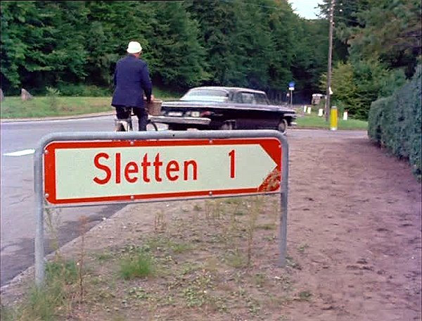
THE PROTECTORS: Route 27 (Don Leaver, 1973)
(15:59) Gammel Strandvej, Humlebæk - Sandven's chauffeur forces Harry off the
road, then takes his gun and disables his car-telephone.
(Spotted by Paul Stroud, December 2013)
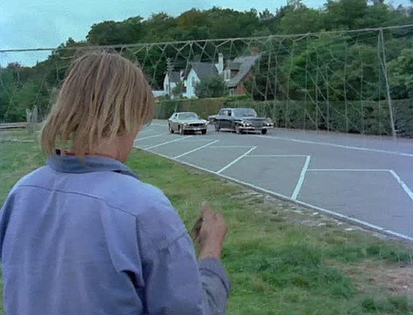
23rd September – A few new photos on the MGM and Shepperton backlot pages.
20 th September - Another find from Pierre Alfonsi who has tracked down the Parisian cemetery seeon in Les Fleurs du Mal. Here is the link to Pierre’s confirmation photograph.

DEPARTMENT S: Les Fleurs du Mal
(Cyril Frankel: Early 1969)
Cimetière de Montmartre, Île-de-France, France:
Weber and his men go in search of Johnny’s secret with Stuart Sullivan in
tow. They find themselves close to Père Lachaise Cemetery (Cimetière de
Montmartre Seen from Rue Caulaincourt).
(Identified by looking Pierre Alfonsi, September 2013)

16th September – A couple of useful identified locations from MAN OF THE WORLD from Gordon Thompson.
MAN OF THE WORLD: The
Sentimental Agent
Shepperton Studios, the road by Stages E, F and G.

MAN OF THE WORLD: The Bandit
High Rocks, Tonbridge
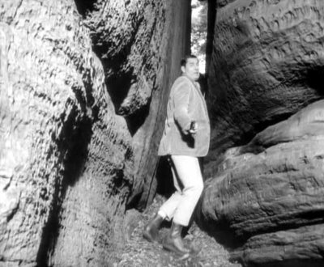
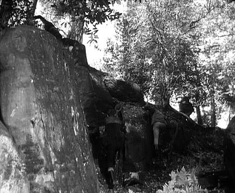

September 12th – After a year of looking Pierre Alfonsi has at last found the location of this railway footage from THE PERSUADERS!: Five Miles To Midnight. The footage wsas shot near Bahnhof Rum (Rum Station), Innsbruck, Austria. Here is the link to a photo Pierre has found https://ssl.panoramio.com/photo/89195930 although the actual location is 47°16'43.43"N, 11°26'29.38"E.
THE PERSUADERS!: Five Miles To Midnight (Val Guest: 1970)
Bahnhof Rum, Innsbruck, Austria - Judge
Futon and Manny Howard travel first class by train and discuss the progress of
Frank Rocco and his escorts (47°16'43.43"N, 11°26'29.38"E).

September 10th– At last Geoff Dodd has been able to confirm this location from DANGER MAN: The Man Who Wouldn’t Talk. We had a rough idea where to look, but Geoff has found enough evidence to nail it. Thanks Geoff.
DANGER MAN: The Man Who Wouldn’t Talk (Michael Truman:
1965)
Maida Avenue, W2 and passing the
junction with Park Place Villas – Drake engineers the escape of Meredith
from Drake’s hotel in an ambulance. Drake follows the ambulance in a
police car as they drive along a canal. Drake picks Meredith up when he
overpowers the ambulance man.
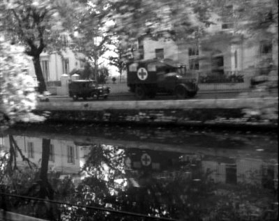
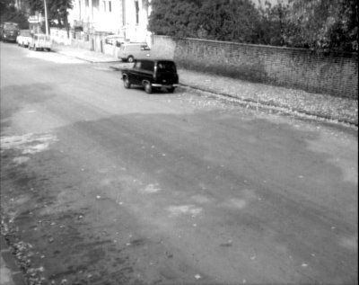
September 8th – Some very interesting spots from Gordon Thompson who wrote in about locations seen in DANGER MAN: Dangerous Secret: “This sequence is on Burma Road Chobham Common. The sequence begins at the junction of Burma Road, Chertsey Road, Chobham Lane and Longcross Road, there is a roundabout there now. At the other end of Burma Road is where the cars leave the road and go onto Chobham Common. This track is still there and can be seen on google maps. Burma Road was also featured in DANGER MAN: To Our Best Friend' and THE SENTIMENTAL AGENT: Express Delivery. Burma Road is the back entrance road to the MOD Longcross Tank Test Establishment. It is now Longcross Studios. Burma Road can easily be recognised. It is for the most part straight and has a prominent angled concrete kerb on one side (MOD).”
DANGER MAN: Dangerous Secret (Stuart Burge: 1965)
Chobham Common, Surrey - Drake follows M.
Barbier from his antiques shop using a tracking device.
(Identified by Gordon Thompson, 8th October 2012)
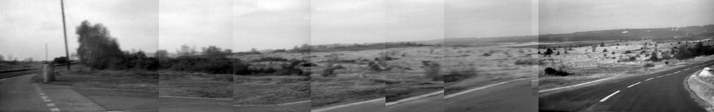
THE SENTIMENTAL AGENT:
Express Delivery (Charles Frend, 1963)
Chobham Common, Surrey - Carlos Thompson
(Carlos Varella ) drives along a rod (Staple Hill Chobham Common and then Burma
Road Chobham Common) where he is stopped at a checkpoint.


THE SENTIMENTAL AGENT:
Finishing School (Harry Fine, 1963)
Chobham Common, Surrey - Bill
Randall (John Turner) and Chin (Burt Kwouk) turn off the road (Staple Hill
Chobham Common).

DANGER MAN: To Our Best Friend (Patrick McGoohan: 1965)
Staple Hill Chobham Common and Burma Road Chobham Common – The Vincents both drive to a roadhouse/petrol
station outside Bagdad. Drake
and The Colonel race to rescue them after the Colonel’s associates plant
a narcotic gas canister in their car.
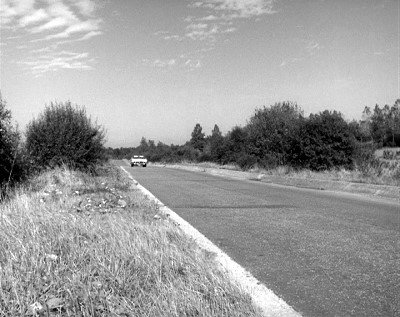


September 6th – During research on MGM British Studios these additional appearances were noted.
Television: ESPIONAGE: To the Very End (1963)
N27: Shenley Hall, Rectory Lane, Shenley
Film: UP JUMPED A SWAGMAN (1965)
N32: Haberdashers' Aske's School
Film: THE INVASION QUARTET (1961)
KILL OR CURE (1962)
Film: STRANGER FROM VENUS (1954)
NIGHT MUST FALL (1964)
MY LOVER, MY SON (1970)
Film: NIGHT MUST FALL (1964)
Television: ESPIONAGE:
A Covenant with Death (1963)
Film: THE DECLINE AND FALL… OF A BIRDWATCHER (1967)
M2: The Three Horseshoes and village green, Letchmore Heath
Television: DICK AND THE DUCHESS: The Candlesticks (1958)
Film: I THANK A FOOL (1962)
Television: GHOST
SQUAD: It Won’t be a Stylish
Marriage (1961)
Film: THE WALKING STICK (1970)
Television: GHOST SQUAD: It Won’t be a Stylish Marriage (1961)
3rd September - Before I could post up Andrew Chilcott’s confirmation, Gordon Thomson, e-mailed me with the same Bank Raid location – spooky!
30th August - Gordon Thomson has sent in a magnificent set of photos he has taken around Haberdashers / Aldenham Estates of the locations featured in THE INVISIBLE MAN TV Series Episode The White Rabbit. I’ve added some of these to the guide. Thanks Gordon.


photos: Gordon Thomson
26th August - Andrew Chilcott has been researching the missing locations from THE INVISIBLE MAN: Pilot Episode. He had suggested Leigh-on-Sea as a possibility, but had been unable to prove this conclusively. Andrew has found the supporting evidence. I’m posting this here in full as it shows the depth of Andrew’s research:
“This photo shows Leigh-on-Sea Station signal box. Here is a snap of it in later years: http://www.flickr.com/photos/tunnel_one/7159526195/ Although each shot was taken at a different distance, note the pre-fabricated concrete structure in the Flickr shot, and its length relative to the signal box itself. That same structure appears in your screen grab, and although there is foreshortening by the camera, the relative proportions are maintained. In both shots I count four bays of windows in the signal box itself;
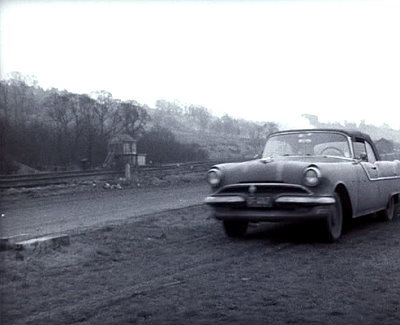
“The railway line was electrified and re-signalled in 1961-62, and so the overhead line structures would not have been present in any of your screen grabs, whereas the signals which do appear in them are now all gone. Note that there is another brick-built structure beside the concrete one at the signal box in the Flickr shot. That dates from the re-signalling project as new-build and so would not appear in your screen grab;
“This shows suburban housing on the skyline, as does this Flickr reverse angle view of the signal box: http://www.flickr.com/photos/beerdave1745/5123209615/ I say these are on Marine Parade. Neither view represents the same angle but if the camera has panned to follow the car there is a possibility you can pick out the distinctive arrangement of chimneys we see in the 'modern' view?
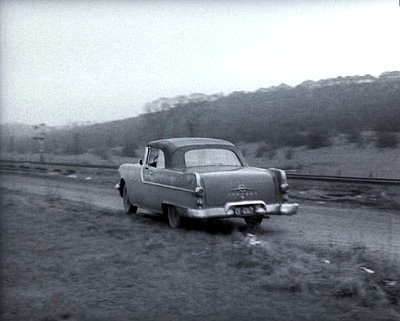
“Here there is a distinctive blob jutting up on the skyline directly above the car's roof. This also appears on the Google Street View here: http://tinyurl.com/llnykpp . The blob turns out to be the ruined Hadleigh Castle, which of course would have been visible then just as now;
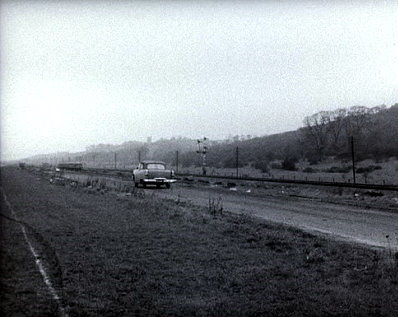
“While overcoats are being compared in here, I think we see on the skyline those houses between Dynevor Gardens and Crescent Road on Marine Parade. Vegetation and topography prevent a present day Google Street View, but the roofs match very well on the Google satellite imagery: http://tinyurl.com/lxox7so The 'action' was accordingly shot on the mudflats below, specifically here: http://tinyurl.com/kr2gowf.”
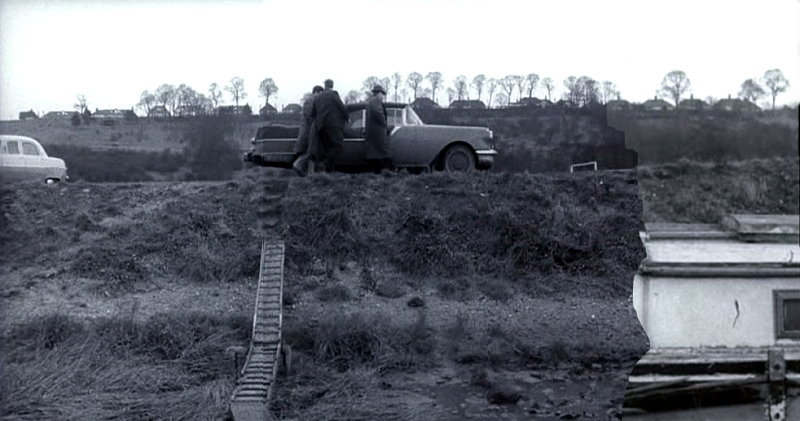
H. G. WELLS' INVISIBLE MAN:
Bank Raid (Wolfgang Suschitsky: 1958)
Leigh-on-sea, Essex - After the bank raid
Brady is taken by Crowther (Willoughby Goddard) and Die Williams (Brian
Rawlinson) to the boat where Sally (Deborah Watling) is being held by Joe,
another of Crowther’s heavies..
THE INVISIBLE MAN: Pilot Episode (Wolfgang Suschitsky: 1958)
Leigh-on-sea, Essex - After the bank raid
Brady is taken by Crowther (Willoughby Goddard) and Die Williams (Brian
Rawlinson) to the boat where Sally (Deborah Watling) is being held by Joe,
another of Crowther’s heavies.
26th August – Max Pemberton as written in with this location spotted in the film DRAGONSLAYER.
Film: DRAGONSLAYER 1981
26th August – Thanks to James Webster who as corerectly pointed out that Gravel Path is in Berkhamsted, not Tring. Hopefully I’ve now corrected my mistake.
25th August – Another find from Andrew Chilcott. The crematorium in THE ADVENTURER: Skeleton in the Cupboard, this is Hendon Crematorium, Hendon cemetery.
THE ADVENTURER: Skeleton in the Cupboard (Cyril Frankel)
Hendon Crematorium, Holders Hill Rd, London,
London, NW7 - The funeral of Professor John Ballard. Karen Ballard
(Sylvia Simms) is supported by Sir Richard McKenzie (Richard Vernon), Master of
the College, and Gene Bradley (Gene Barry) who was to investigate
Ballard’s misappropriation of funds.

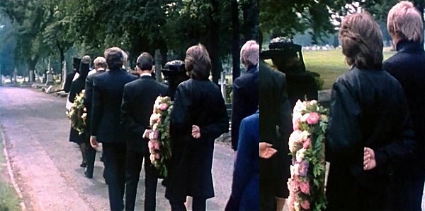
25th August – Another location from THE BARON has been found by Andrew Chilcott. This was a very tricky one to locate as even the Railway enthusiasts have not documented this tunnel very well. Andrew did a lot of map work to locate this one, well done!
THE BARON: Farewell to Yesterday (Leslie Norman: September 1965)
G33: Railway Tunnel, Ganwick Corner, nr. Bentley Heath,
Potter's Bar - Mannering threatens to smash Nick's henchman against the
wall of an oncoming tunnel unless he reveals the location of Nick's cabin.
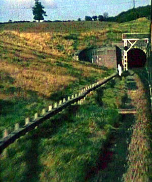
11th August – Two more obscure locations identified by Andrew Chilcott. These are both examples of Berkhamsted, representing France.
THE SAINT: The Abductors (Jeremy Summers: ??)
B22: Gravel Path, Ellesmere Road, Berkhamsted, Herts
– Simon drives into the village of Epernay to ask directions to Chateau
Belleville.


THE BARON: The Seven Eyes of Night (Robert Asher: April 1966)
B22: Gravel Path, Ellesmere Road, Berkhamsted, Herts
– Cordelia follows Jeff Walker in The Baron's Jensen not knowing that she
is leaving Mannering in mortal danger.
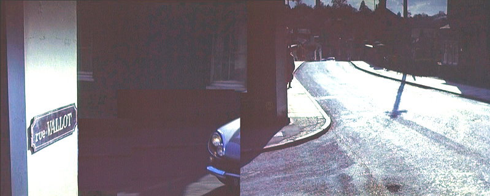
11th August – A great find from Andrew Chilcott who has manged to identify this top secret location. Andrew wrote “This is an aerial view of the former UK Atomic Energy Authority site at Winfrith in Dorset looking westwards. It is presently being decommissioned. Further, the installation highlighted in ink is the experimental DRAGON reactor completed in 1962. Those in charge of cleaning up the Winfrith plant have a website which includes a very similar 1957 aerial view to that in the photograph.
THE AVENGERS: The Bird Who Knew Too Much (Roy Rossotti: October 1966)
Frank Elrick examines the photograph he as found. It shows the position of a secret missile installation (The experimental DRAGON reactor, at the former UK Atomic Energy Authority site).
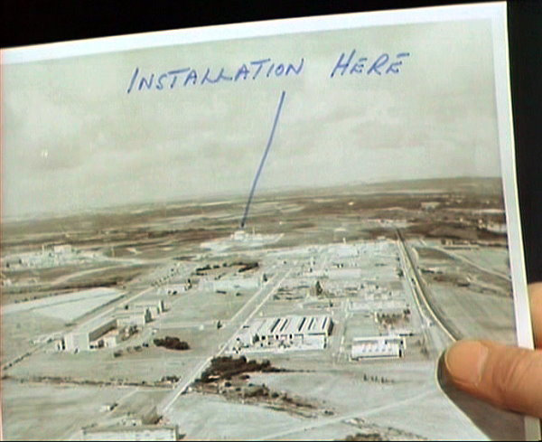
12th July - GBC on the Britmovie forum has at last identified one of the location from this scene in The Girl From Auntie – GBC writes: ‘The cab is driving west with parliament to the left off screen. That double kerbs still there, as is the distinctive building with two small windows between the partition window and the drivers face. The arch and columns are at no 4 Millbank, although in the Google street maps view it's hidden by a tree from every angle!’
THE AVENGERS: The
Girl From Auntie (Roy Baker: October 1965)
Abingdon Street and Millbank, SW1
– After leaving Barrett, Barrett and Wimpole, Steed and Georgie Price
Jones take their taxi to the offices of the four Jacques brothers (back
projection inside cab).
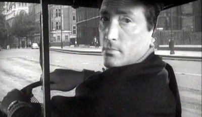
1st June – In September 1965 work started at MGM Britiish Studios on an adaptation of Robin Estridge’s Day of the Arrow to be called simply 13. The film was to star Kim Novac and David Niven. Location filming took place duriing September at the Château de Hautefort in the Dordogne department of southwestern France. In October the cast were back in Borhamwood filming at the studios. In November the title of the movie had been changed to THE EYE OF THE DEVIL. In December Kim Novac left the project to be replaced by Deborah Kerr which entailed a further seven weeks of filming including a week at Hautefort. The production was completed in early February 1966. The film was released in July 1966.
Château de Hautefort represents the fictional Castle Bellenac which overlooks the town of Bellenac. In the film, an annual ‘Festival de 13 Jouas’ is celebrated in the square by the church and the whole town attends.


For the film, although the festival is established in the actual town of Hautefort, the rest of the action takes place on the backlot at Borehamwood.


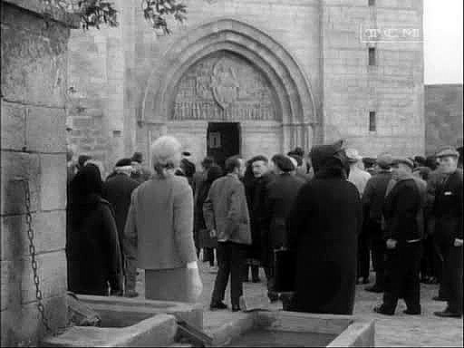
Art director Elliot Scott based his design for the Borehamwood version of Bellenac on Hautefort itself and the architecture other towns in the region. Some of his design includes faithful recreations of sections of actual buildings. This backlot version of Bellenac would stand in Borehamwood until the site was redeveloped in 1973 and be redressed to feature in a number of film and television series including THE PRISONER and U.F.O.. Featured here are some comparison photographs of the buildings found that form the basis of the buildings founf in the backlot set.

Hautefort

Beaumont-du-Périgord

Saint-Amand-de-Coly

Beaumont-du-Périgord

Beaumont-du-Périgord

Saint-Amand-de-Coly and Hautefort
18th May - Andrew Staton has been in touch with this obscure
location from MAN OF THE WORLD.
MAN OF THE WORLD: The Highland Story
Stobo Castle, Scottish Borders, Scotland
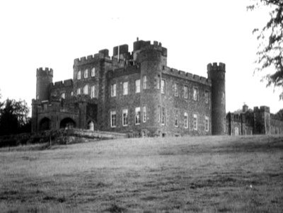
4th May - Another great find from Geoff Dodd who has traced this distinctive farm from Where the Money Is.
THE SAINT: Where the Money Is (Roger Moore: Summer 1968)
O2: Ridge Village - At the end of the episode the kidnappers take Simon to pick up the ransom money from this barn (Ridge Farm, Crossoaks Lane/Deeves Hall Lane).
(Identified by Geoff Dodd, 4th May 2013)
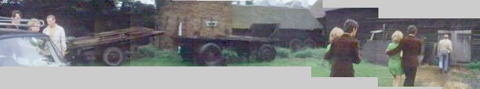

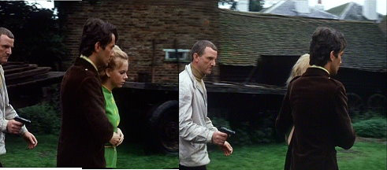
24th April - The one has been on the books for a long time, but has at last been identified by Sam Denham.
THE SAINT: The
Covetous Headsman (Michael Truman: 1962)
Beades Mews, NW3 - Beades Mews/New
End/Streatley Place junction in Hampstead, NW3 – Simon Templar (Roger
Moore) goes to consult his ex-resistance colleague Antoine Louvois about
Georges Olivant (Beades Mews/New End/Streatley Place junction in Hampstead).

21st April - Tavistock of the Britmovie forum has done some
sterling work to identify these locations from the opening sequence of The Beckoning Fair One.
JOURNEY TO THE UNKNOWN: The Beckoning Fair One (Don Chaffey: 1968)
(Identified April 2013 by Tavistock of the Britmovie forum)
Wilton Square, N1 - The peace of a
quite Chelsea square is broken by the sound of air raid sirens.
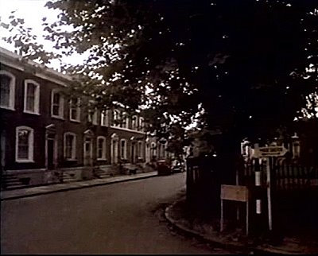
Awyne Place/Alwyne Road N1 - An air raid has started and Crichton (Clive Francis) rushes to the Chelsea home of Alison with a marriage licence.
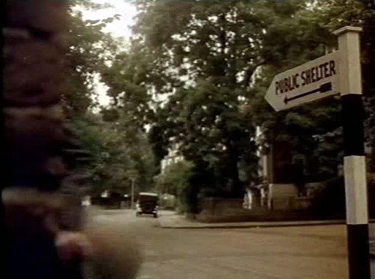
Baring Street, N1 - A woman covers the windows of her shop with blackout shutters and nearby pub (The Baring) is evacuated as an air raid is announced by the sound of sirens and the drone of aircraft engines.

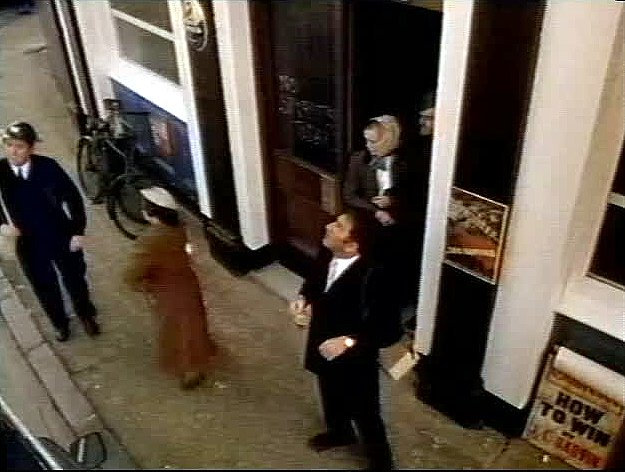
31 Alwyne Road, N1 - An air raid has started and Crichton (Clive Francis) rushes into the Chelsea home of Alison (31 Alwyne Road) with a marriage licence after getting leave unexpectedly. Decades later Mr. Barrett (Larry Noble) helps Jon Holden move into the house that he has rented.
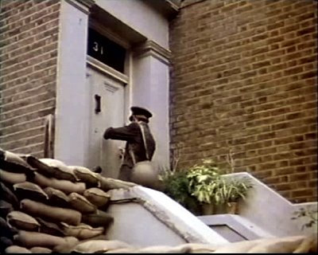
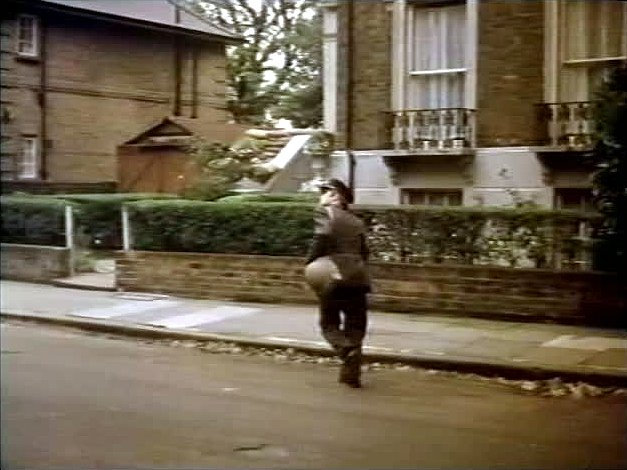
19th April - Geoff Dodd is on fire this month, he has just found this very tricky location from THE NEW AVENGERS.
THE NEW AVENGERS: Dead Men Are Dangerous (Sidney Hayers: Spring 1977)
F55: Beaconsfield Cricket Club, London Road junction with Minerva Way, Beaconsfield - John Steed (Patrick Macnee), Gambit (Gareth Hunt) and Purdey (Joanna Lumley) relax off duty playing a few cricket strokes. Between them they christen the ‘purdka’ and Steed notices a strangely familiar figure in the distance.
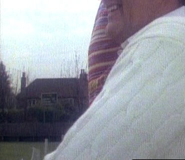


15th April - Another lightning fast identification from Alan Field.
JOURNEY TO THE UNKNOWN: Poor Butterfly (Alan Gibson: October 1968)
A406 North Circular, NW4 - Commercial artist, Steven Miller (Chad Everett) has received an invitation to attend a weekend party in the country and sets off out of London his1929 Bugatti (outside Brent Cross Shopping Centre and near Claremont Road, redeveloped).

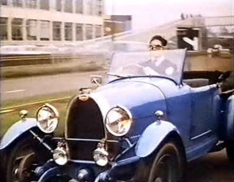


12th April - Mike Richardson has sent in these three locations fromTHE AVENGERS: Sell Out.
THE AVENGERS: Sell Out (Don Leaver: June 1962)
Hammersmith Flyover, W6 - Steed and Doctor King drive to Heathrow Airport in an AC sports car.
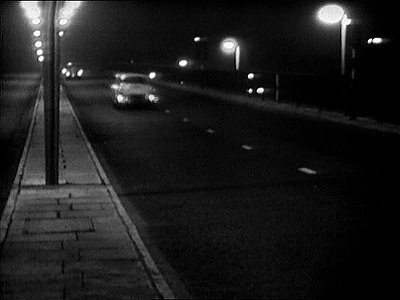
THE AVENGERS: Sell Out (Don Leaver: June 1962)
Tunnel Road East, Heathrow Airport - Steed and Doctor King drive to Heathrow Airport in an AC sports car.
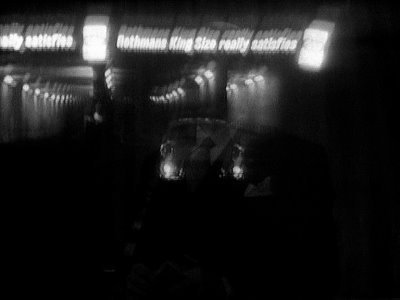
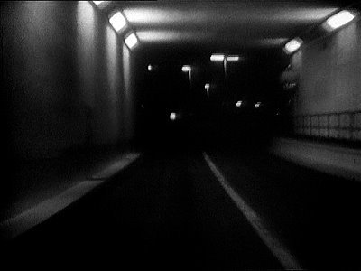
THE AVENGERS: Sell Out (Don Leaver: June 1962)
Great West Road, Brentford - Steed and Doctor King drive to Heathrow Airport in an AC sports car (they pass was the now demolished Firestone Factory).
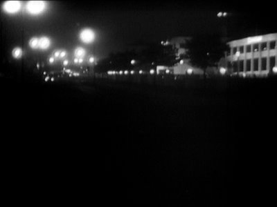
8th April - After an intensive search Geoff Dodd has at last found thios elusive location from Death's Door.
THE AVENGERS: Death's Door (Sidney Hayers: June 1967)
M23: Hilfield Lane - Melford gets a fright when a cyclist suddenly turns in front of his car as he and Steed drive to the conference (Hilfield Lane between Hilfield Castle and Hilfield Farm).

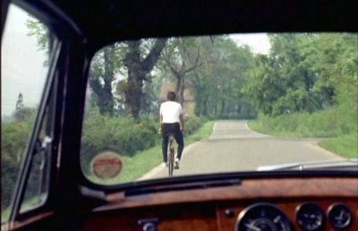
6th April - An unexpected find from Geoff Dodd as it is so close to Borehamwood.
THE HUMAN JUNGLE: Skeleton in the Cupboard (Roy Baker. ???)
Q33: Barham Avenue, Borehamwood - The home
of Dr Fisher (Allan Cuthbertson) where Dr. Corder (Herbert Lom) goes to talk
about the Brindley family (Hispania,1Barham Avenue).


2nd April - After a good few years Geoff
Dodd has at last identified this location from the THE BARON episode Diplomatic
Immunity.
THE BARON: Diplomatic Immunity
Craven Road, W2 – After taking a
sharp corner in his Jensen, Mannering decides that his car is being followed by
a Jaguar (Craven Road at the junction with Westbourne Terrace, looking
towards Praed Street).
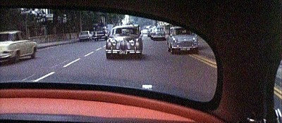
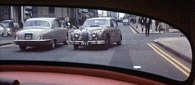
6th March - A very pleasant surprise today. Daniel Bauer has spent the last few days searching for the hairpin road seen in THE PRISONER: Do Not Forsake Me Oh My Darling and today he has found it. This footage was originally taken from material shot for the Pan-Am travelogue WINGS OVER AUSTRIA, which was market as stock footage by World Backgrounds and also used in THE SAINT: The Russian Prisoner which lead to another identified location. Thank you and well done Daniel.
Silvretta Hochalpenstraße, Vorarlberg, Austria: THE PRISONER: Do Not Forsake Me Oh My Darling
Potter drives up a steep mountain pass following the radio signal leading to Number 6.
(Identified by Daniel Bauer, March 6th, 2013)
Silvretta Hochalpenstraße, Vorarlberg, Austria: THE SAINT: The Russian Prisoner
Simon Templar and Irma Jorovitch drive from Geneva through the alps to Lucerne via a winding mountain road.

Piz Buin, Gasthof, Bielerhöhe am Silvrettasee, Austria - THE SAINT: The Russian Prisoner
Simon Templar and Irma Jorovitch arrive at Lucerne hotel near the Villa Bauregarde. where Karel Jorvitch is being held
(Identified by Daniel Bauer, March 6th, 2013)

5th March - Following on from Geoff's find, Alan Field has manged to piece together another part of the jigsaw. "This (image below) is Hollybush Lane. "The sequence starts outside what is now Greentiles Nursery, and heads towards Hollybush Farm, and its, now demolished, barns."
H73: Hollybush Lane, Denham - THE NEW AVENGERS: Eagles Nest (Desmond Davis: April 1976)
Gambit helped himself to the white Citroen to follow the van from the conference centre (Gambit 's point of view).
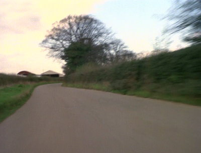
3rd March - Geoff Dodd has found this very tricky location from THE NEW AVENGERS: Eagles Nest. The area has changed much and the original camera work was very creative. Certainly hard to find, but Geoff has at last found it.
H32: Quarry Cottages, Willets Lane, Nr. Rush Green - THE NEW AVENGERS: Eagles Nest (Desmond Davis: April 1976)
Gambit helped himself to the white Citroen to follow the van from the conference centre (Southlands Road at the junction with Hollybush Lane looking towards New House Farm).
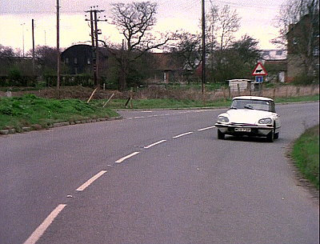
14th February - Sam Denham has found this junction from THE NEW AVENGERS: House Of Cards. This is Fingest, where Skirmett Road converges with Dolesden Lane. All this recent work on THE NEW AVENGERS is giving us a much clearer picture of the area used for the filming of the series which should make further research a little easier.
E2: Fingest - THE NEW AVENGERS: House Of Cards (Ray Austin: Spring 1976)
Perov and Cartney on their way to Steed’s place (Skirmett Road converges with Dolesden Lane).
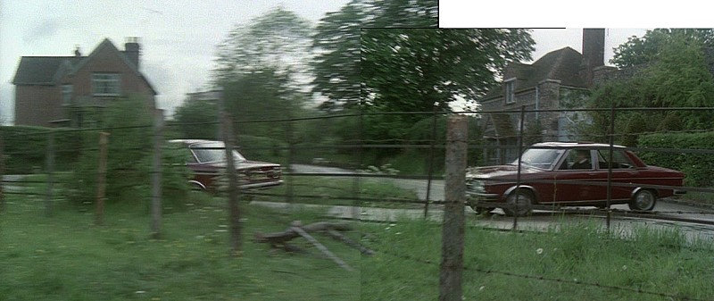
27th January - Many thanks to David Sinclair who has sent this link to the very useful Hampstead Garden Suburb web site. He was also kind enough to point out that a location listed as "Unknown" on Location Spotting Page 75 had already been idenified in 2004. Please let us know if you spot any mistakes on the site so we can correct them.
26th January - Sam Denham has found a real gem of a location. Long thought to be part of ATV Elstree Studios, Borehamwood, Sam has studied the sequence and discounted the ATV Studios. He has also managed the next step by identifying the locations as the Crystal Palace National Sports Centre, Here is the Bing Maps link.
UFO:The Responsibility Seat (Alan Perry: August 1969)
Crystal Palace National Sports Centre, Crystal Palace Park, Surrey - Ed Straker (Ed Bishop) escorts Jo Fraser (Jane Merrow) back to her car after she has interviewed him at the Harlington-Straker Studios (Crystal Palace National Sports Centre). She watches him walk away to his duties on the back-lot then makes her way back to Straker's office..
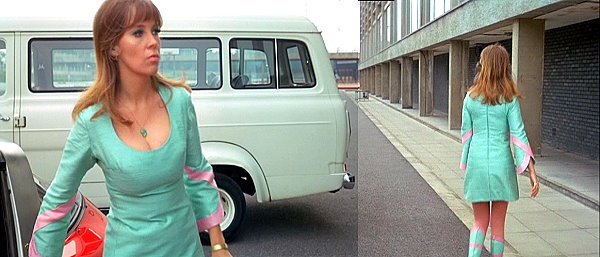
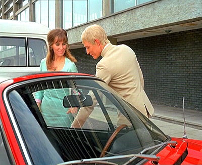
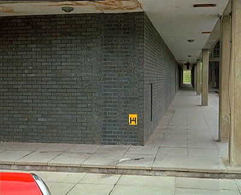
26th January - A complete list of MAN OF THE WORLD locations, known and unknown has been added. A work in progress with more unknowns that knowns. Help turning the former into the latter would be appreciated.
Work still to be done on adding locations found towardss the end of last year to the guide.
15th January - Paul Stroud has sent in a comprehensive list of locations for THE ZOO GANG. This includes unknown locations a as well as all the ones he has traced over the years. Please follow this link to get to all the juicy details:
1st January - Happy New Year and the first location found in 2013 is...
THE PERSUADERS!: Element of Risk (Gerald Mayer: 23rd Feb 1971)
F54: Tara Stables, Colley Hill Lane, Hedgerley, Slough, Berkshire, SL2 4AT - The farmhouse where Danny and Lord Brett are held the night before the raid on the Amercian Air base.

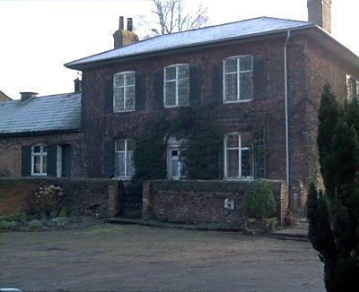
2013
31st December - Many thanks to Peter Astaire for finding this location so quickly.
THE NEW AVENGERS: Sleeper (Graeme Clifford: September 1976)
Roland Gardens, SW7 – As Steed (Patrick Macnee) and Gambit (Gareth Hunt) run through a deserted London following Purdy's carthey pass Steed's hotel where Steed notices thet George, the hotel porter,wears red socks. Both men duck into a doorway when they hear a bus aproaching.

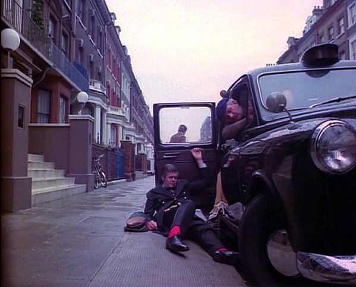
29th Decenber - Mike Richardson's eagle eye spotted this one.
THE AVENGERS: Return of the Cybernauts (Robert Day: May 1967)
N35: Tykes Water Lake, Bridge and approach road, Aldenham Park - The Cybernaut (Terry Richards) carries the unconcious Neville (Charles Tingwell) towards Beresford's house.
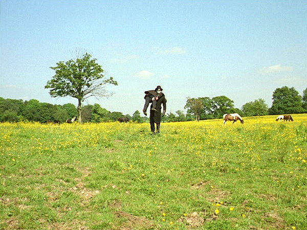
27th December - THE NEW AVENGERS: Obsession (Ernest Day: May 1977)
F42: Springwell Chalk Pit, Springwell Lane, Harefield - Larry Doomer's father is stopped at a road block in a middle eastern country and killed.


DEPARTMENT S: The Shift That Never Was (John Gilling: Autumn 1968)
Hams Hall Power Stations, Warkickshire (demolished) - Establishing shots of Northover Atomic Power Station.
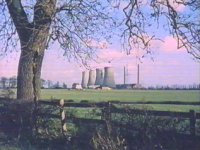
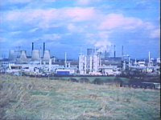

RANDALL AND HOPKIRK [DECEASED]: Could You Recognise the Man Again? (Jeremy Summers: April 1969)
Whitehall, SW1 - Jeff and Jeane race through London in order to get to the court in time fro Jeff to give his wintess statement (back projection).


20th December - A couple of absolute gems from Mark Pond. First clarification about the location of the The Ministry Building from Angles of Death and secondly, identification of the field where the aircraft is waiting in The Morning After.
THE NEW AVENGERS: Angles of Death (Ernest Day: April 1977)
H74: South Bucks District Council offices, Windsor Road, Slough (demolished) – The Ministry Building where Steed (Patrick Macnee) confronts Peter Manderson (Terence Alexander) about his little secret and tells him to drive.

THE PERSUADERS!: The Morning After (Leslie Norman: 1971)
F21: Denham Aerodrome, Denham - Lars Seelman is kidnapped by Kristen and Jon and drien off the road and into a airfield where a Cessna aeroplane is waiting for them (The field opposite Denham Aerodrome end of the runway 24).

12th December - Alan Hayes has sent in a nice collection of locations from THE AVENGERS: The Frighteners.
THE AVENGERS: The Frighteners (Peter Hammond, June 1961)
Berwick Street, W1 -

Coventry Street, W1 -

Shaftesbury Avenue, W1 -